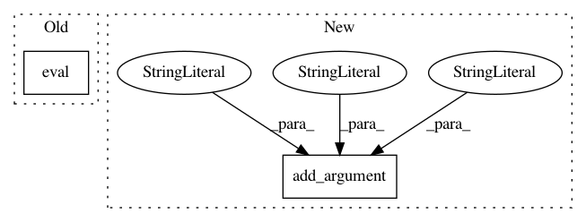

7c8e6237904a9adf6fb15b7be2d5aea1973fedd1,transcribe.py,,,#,65
Before Change
model = DeepSpeech.load_model(args.model_path)
device = torch.device("cuda" if args.cuda else "cpu")
model.to(device)
model.eval()
labels = DeepSpeech.get_labels(model)
audio_conf = DeepSpeech.get_audio_conf(model)
After Change
parser = add_inference_args(parser)
parser.add_argument("--audio-path", default="audio.wav",
help="Audio file to predict on")
parser.add_argument("--offsets", dest="offsets", action="store_true", help="Returns time offset information")
parser = add_decoder_args(parser)
args = parser.parse_args()
device = torch.device("cuda" if args.cuda else "cpu")
model = load_model(device, args.model_path, args.cuda)
In pattern: SUPERPATTERN
Frequency: 3
Non-data size: 2
Instances
Project Name: SeanNaren/deepspeech.pytorch
Commit Name: 7c8e6237904a9adf6fb15b7be2d5aea1973fedd1
Time: 2019-01-29
Author: sean.narenthiran@digitalreasoning.com
File Name: transcribe.py
Class Name:
Method Name:
Project Name: ruotianluo/self-critical.pytorch
Commit Name: a258cacef0569253614063bfb611d7c2b22f19bd
Time: 2019-02-14
Author: rluo@ttic.edu
File Name: eval_ensemble.py
Class Name:
Method Name: